Selector Universal
Aplica estilos a todos los elementos del documento.
Código CSS
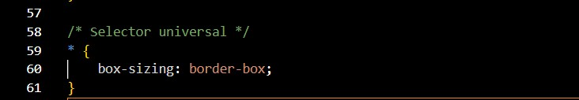Resultado HTML

Selector de tipo etiqueta
Afecta a todas las etiquetas HTML de un mismo tipo.
Código CSS
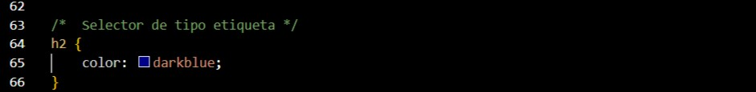Resultado HTML
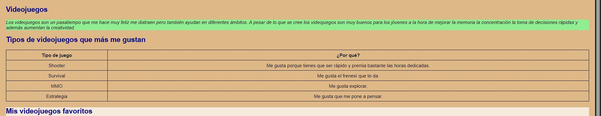Selector por id
Aplica estilos a un único elemento que tenga un id.
Código CSS
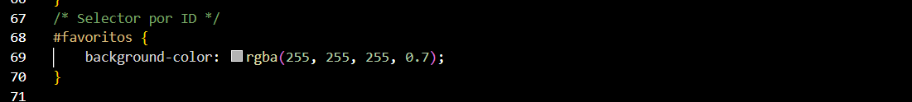Resultado HTML
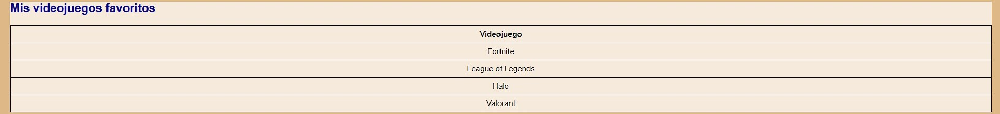Selector por clase
Aplica estilos a varios elementos que tengan la misma clase.
Código CSS
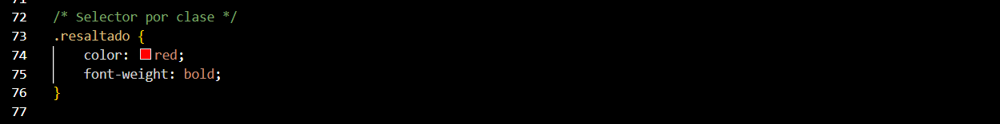Resultado HTML
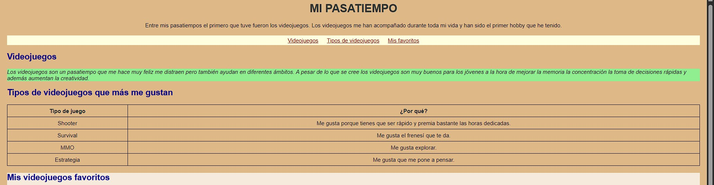Selector por atributo
Selecciona elementos que tengan un atributo específico.
Código CSS
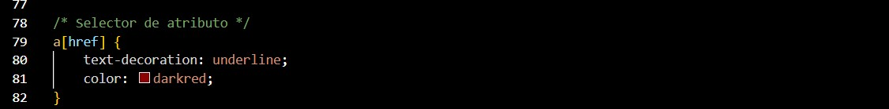Resultado HTML
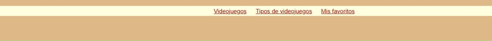Selector de lista
Aplica el mismo estilo a varios selectores distintos.
Código CSS

Resultado HTML
Selector de descendientes
Selecciona elementos que están dentro de otro elemento.
Código CSS
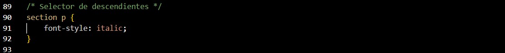Resultado HTML
Selector de hijos directos
Selecciona solo los hijos inmediatos de un elemento.
Código CSS
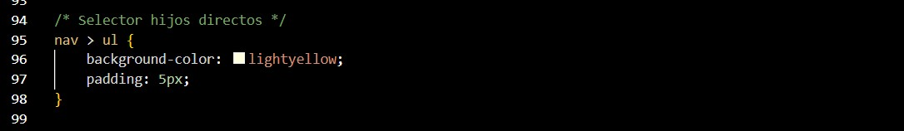Resultado HTML
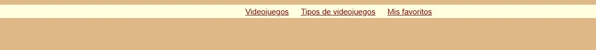Selector hermano adyacente
Selecciona el elemento que viene justo después de otro.
Código CSS
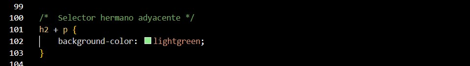Resultado HTML
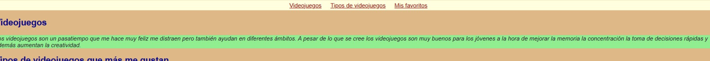Selector de hermano general
Selecciona todos los hermanos posteriores de un elemento.